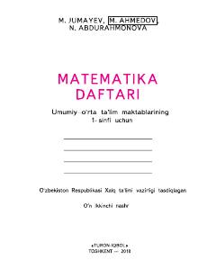

MD1-sinf o'quvchilari uchun matematika fanidan mustahkamlash daftari.
Ushbu o'quv qo'llanma umumiy o'rta ta'lim maktablarining 1-sinf o'quvchilari uchun mo'ljallangan bo'lib, matematika darsligidagi bilimlarni mustahkamlashga xizmat qiladi. Daftar o'quv yilining birinchi yarmi uchun mo'ljallangan bo'lib, o'quvchilarning mustaqil ravishda misol va masalalarni yechishini ta'minlaydi.